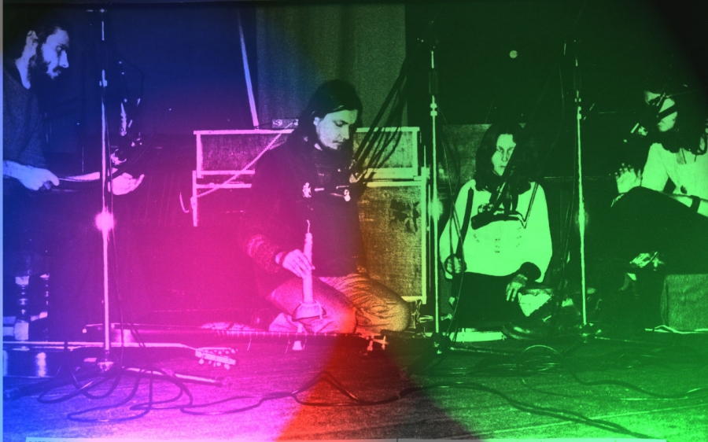

drukuj
drukujMUZYKA
Warsztaty Swobodnej Improwizacji
Założenia:
Muzyka jest sposobem komunikowania się pomiędzy ludźmi, przekazywania emocji i stanów duchowych.
Jest zjednoczeniem człowieka z rytmem wszechświata.
Jeżeli nie umiesz grać, nie masz poczucia rytmu i słuchu, to jesteś idealnym uczestnikiem warsztatu.
Jeżeli uczyłeś się muzyki – zapomnij.
Bądź czystą niezapisaną kartą, umysłem poczatkującego.
Bądź mistrzem samego siebie!
Na warsztacie nie oceniamy naszych umiejętności i techniki. Poszukujemy dżwięków, które leczą w tej właśnie jedynej i niepowtarzalnej chwili.
Muzyka uwalnia od niepotrzebnie powstrzymywanych emocji, napięć i stressu.
Granie na instrumentach, takich jak bebny, trąby aborygenskie, fujarki pasterskie i dzwonki tybetanskie relaksuje i uspokaja, przywraca równowagę.
Dźwięki bębnów, co zostało potwierdzone naukowo, wpływają na fale mózgowe, rytm serca, napięcia mięśni i funkcje gruczołów hormonalnych.
Uaktywniają części mózgu dotychczas uśpione.
Zamiast porozumiewania się słowami proponujemy komunikację dźwiękową.
Na początku jest chaos, który przekształca się stopniowo w coraz bardziej doskonałą formę.
Efekty mogą być zaskakujące: zabawa przemienia sie w medytację i odwrotnie.
Sytuacja taka jest wspaniałą okazją do tworzenia muzyki bez względu na wiek, kwalifikacje i umiejetności. Spontanicznie, bez kompleksów i obciążeń oraz oczekiwań.
Jest okazją do poznania siebie. Wszyscy umiemy grać, śpiewać i tańczyć!
Podstawą naszych działań jest intuicja. Nie wykluczamy sytuacji transowych!
Czas trwania warsztatu jest teoretycznie nieograniczony ( minimum 3-4 godziny).
Zaczynamy w sobotę przed południem. Napewno będzie to dobry początek weekendu.
Warsztat jest otwarty dla wszystkich, bez wzgledu na wiek i zawód. Odnalezienie wspólnego języka, jakim jest dźwiek i rytm przez ludzi różnych pokoleń, o różnych poglądach będzie fascynujące.
Andrzej Turczynowicz warsztaty muzyczne swobodnej improwizacji prowadzi od 1977 roku, m.in. na Mokotowskiej Jesieni Muzycznej (wyróżnienie za oryginalne propozycje muzyczne), na Sesji Naukowo-Warsztatowej "Subkultury Młodzieżowe 2000", w klubie Remont, Ośrodku w Głoskowie (prowadzonym przez Marka Kotańskiego), w Studio Przedstawień w Pogorzeli.
Jedna z uczestniczek napisała po warsztacie:
"Wiele się o sobie dowiedziałam i nie chciałabym tego stracić. Atmosfera była dla mnie absolutnie niezwykła i poruszająca. Chciałabym kiedyś jeszcze raz przeżyć coś podobnego..."
